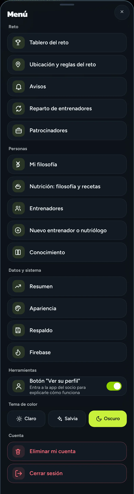
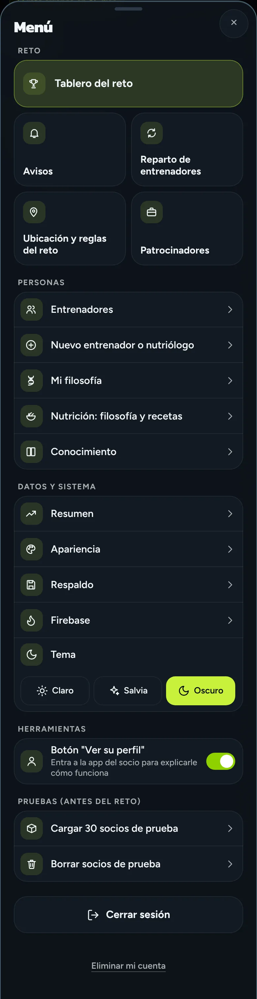

Mismas opciones, mejor acomodadas: lo del reto arriba y a la mano, lo demás en listas compactas y la cuenta al final, como en el Perfil del socio.
Antes y después

Actual

Propuesto
Qué cambia
Reto en mosaico: el Tablero arriba a todo lo ancho y resaltado; Avisos, Reparto, Reglas y Patrocinadores en cuadros de dos en dos (cuatro en tableta).
Listas agrupadas: Personas y Datos y sistema en una sola tarjeta cada una, con renglones separados por una línea fina y flecha. Menos cajas, menos scroll.
Personas en orden de uso: Entrenadores y Nuevo entrenador primero; filosofía, nutrición y conocimiento después.
Tema dentro de Datos y sistema en lugar de un bloque suelto.
Cuenta al final: Cerrar sesión como botón claro; Eliminar mi cuenta como texto chico y separado, para no tocarlo por error. Antes estaban juntos y los dos en rojo, con Eliminar primero.